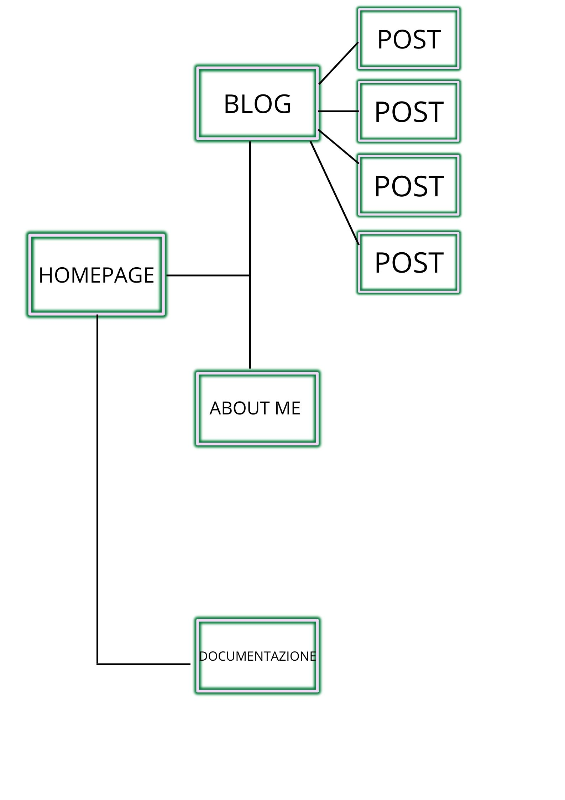
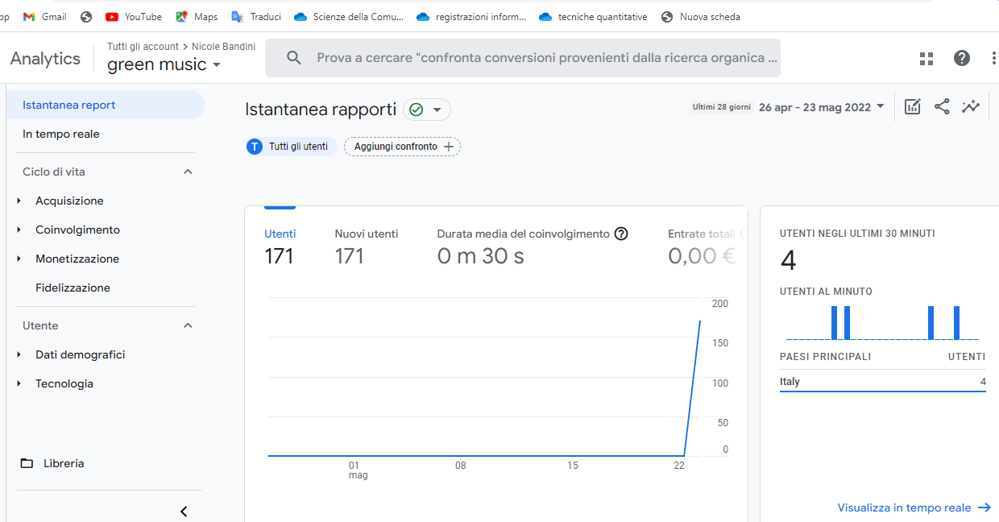
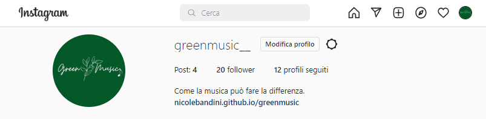

Green music nasce dall’unione di due temi all’apparenza distanti ma in realtà vicini: musica e ambiente. Attraverso questo blog voglio far sì che le persone che quotidianamente, in un modo o nell’altro, si approcciano alla musica siano più informate e consapevoli sul modo in cui si può intrecciare con l’ambiente e la sostenibilità.
Obiettivi:
L’obiettivo principale di questo blog è fare informazione. Molto spesso non si pensa all’impatto ambientale che il mondo della musica può avere; l’intento di questo blog è proprio aumentare la consapevolezza e proporre esempi di come sia possibile ridurre questi danni.
Target:
Green music si rivolge a un pubblico abbastanza ampio, considerando che la musica è uno degli elementi che accomuna più generazioni. È evidente che il blog sia rivolto però principalmente a coloro che hanno a cuore l’ecologia e l’ambiente.
Competitors:
I competitors principali che ho analizzato sono ilpapaverorossoweb e eicomenergia. Entrambi sono blog che hanno come tema l’ambiente e, in alcuni post, hanno unito questo argomento centrale con la musica. A differenza di questi due siti, ho deciso di scrivere articoli più brevi e usare una grafica più minimalista, per evitare che i visitatori vengano distratti o perdano interesse. I siti competitors infatti si dilungano abbastanza riportando anche fin troppi dettagli.
Architettura del sito eWireframe
Look and feel
Il colore predominante è il tiffany, abbinato al colore nero dei font. I font utilizzati sono:
-'Montez', cursive; utilizzato per mettere in risalto lo slogan del sito.
-'Jost', sans-serif; utilizzato invece per il resto del sito, aumentando le dimensioni per i titoli. In questo modo ho ottenuto un aspetto uniforme e pulito.
Linguaggi e strumenti
Html
Css
Template W3school
Canva per il logo e il wireframe
Come è emerso dall’analisi dei competitors, non esistono siti che si dedicano completamente all’unione degli argomenti musica e ambiente, ma solo sezione dedicate. Il mio blog invece cerca di sensibilizzare proprio su questi due temi principali. È stato creato partendo da un layout di W3school che ho poi personalizzato, rendendolo personale e conforme ai miei gusti.
50 visualizzazioni e 20 follower su Instagram
Il target utente primario è abbastanza vasto e comprende principalmente gli amanti della musica, ma anche le persone a cui sta a cuore l’ambiente. Per lo stile, il linguaggio e le piattaforme utilizzate per la promozione è prevedibile che sarà più facile raggiungere un pubblico giovane. Ciò che volevo trasmettere è l’impatto che il settore musicale può avere sull’ambiente e quali soluzioni sono state trovate fino ad ora per ridurlo.
Per la promozione del mio blog ho utilizzato le storie di Instagram e il passaparola su whatsapp.
Risultati raggiunti
 